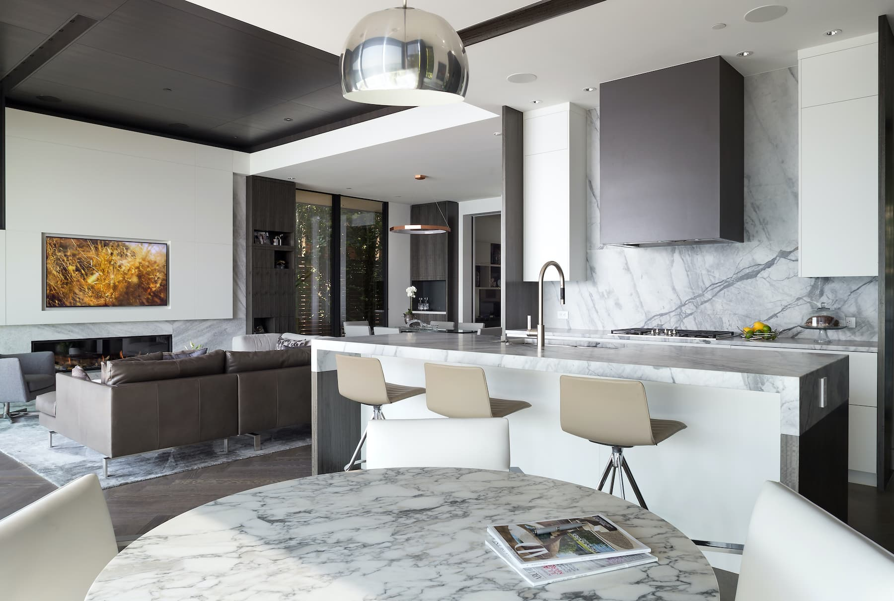
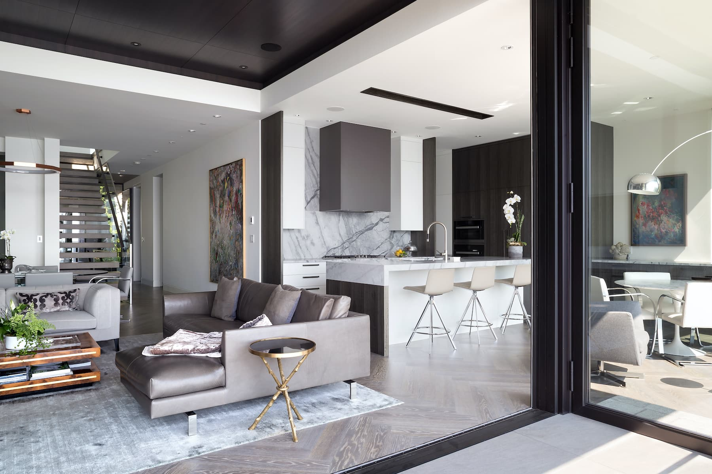

The primary challenge presented by the narrow and steeply
sloping property is to accommodate
parking. The Design parti
uniquely locates the Garage at the top of the property and is
connected via a skybridge to the Principal Residence.
Minimizing the extent of driveway
allows
for the creation
of extensive Gardens and courtyards which enhance the overall
experience of
living on this property, and privacy. The Skybridge
provides a dramatic journey into the
Residence with elevated views
of the Garden space which flows continuously underneath.
Oceanfront Home

DESIGN

Features
Limited palette of zinc, stone, wood and glass echo materials found on the shoreline and further connect the building to its’ beachfront milieu
INTERIOR




kitchen
LIVING ROOM